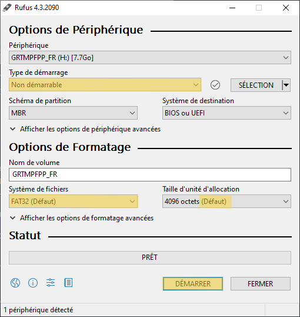

Nintendo DSi - Homebrew France Docs
Rejoignez Le Homebrew France pour obtenir de l'assistance ou nous aider à développer le guide.
Ce guide vous permettra le jailbreak permanent de votre Nintendo DSi via TWiLightMenu++ et Unlaunch (optionnel). Ce guide est uniquement appliquable sur Windows et macOS, pour les utilisateurs sous Linux, référez vous à cette page.
I. Formatage de la carte SD
Attention : le formatage va supprimer toutes les données de votre carte SD, pensez à les copier avant de procéder.
Prérequis
- Une carte SD ou une carte micro SD avec adaptateur. La taille recommandée pour une Nintendo DSi est de 16Go, mais cela fonctionne avec une carte de capacité inférieure ou égale à 2Go.
- La dernière version de Rufus (Windows uniquement)

- Un ordinateur avec un lecteur de carte SD ou de carte micro SD selon ce que vous possédez.
- Insérez votre carte SD dans votre ordinateur.
- Ouvrez le fichier
rufus-X.X.exe - Sélectionnez si vous souhaitez recevoir les mises à jour de Rufus automatiquement.
- Sélectionnez votre carte SD et sélectionnez le options comme indiqué :


Sur macOS, le formatage peut être directement effectué depuis le gestionnaire de périphériques. Sélectionnez simplement "MS-DOS (FAT)" au moment du formatage.
II. Lancement de l'exploit
Prérequis
- Insérez la carte SD dans votre console.
- Lancez l'appareil photo et cliquez sur "Carte SD".
- Prenez une photo (une photo complétement aléatoire fera l'affaire, elle sert simplement à créer le dossier de gestion des photos).
- Eteignez la console et remettez la carte SD dans votre ordinateur.
- Rendez-vous dans le dossier
sd:/private/ds/app/484E494Aet renommez le fichierpit.binentip.bin. - Dans le pack téléchargé précédemment, rendez-vous dans le dossier
Memory Pit, allez dans le dossier correspondant à votre région et votre version de console, copiez le fichierpit.bindans le dossiersd:/private/ds/app/484E494Ade la carte SD de votre console. - Dans le pack téléchargé précédemment, rendez-vous dans le dossier
DSI, copiez tout son contenu à la racine de la carte SD de votre console. - Dans le pack téléchargé précédemment, rendez-vous dans le dossier
PCet ouvrezLazyDSiFileDownloader(macOS ou Windows selon votre système d'exploitation), puis cliquez sur "Next". - Cliquez à nouveau sur "Next".
- Décochez "Download latest dumpTool version ?" et "Download latest Unlaunch version ?" puis cliquez sur "Next".
- Sélectionnez votre carte SD puis cliquez sur "Start".


A présent pour accéder au TWiLightMenu++, il vous suffit de lancer l'Album Photo. Pour qu'il se lance au démarrage, continuez vers la section III.
III. Installation d'Unlaunch (Optionnel)
Dans cette section, nous partons du principe que les étapes précédentes ont toutes été réalisées comme il se doit. Les étapes suivantes ne sont pas obligatoires, elles peuvent être faites si vous préférez que le TWiLightMenu++ se lance au démarrage.
Attention : en installant Unlaunch il y a un léger risque de brick (le risque est extrêmement faible si les étapes sont réalisées comme indiqué).
Création d'une "backup" NAND (Obligatoire)
- Ouvrez l'application "Appareil Photo", cliquez sur "Carte SD" puis sur "Album Photo". Le TWiLightMenu++ devrait se lancer.
- Appuyez sur
 jusqu'à ce que vous ne pouvez plus, vous arriverez à la racine.
jusqu'à ce que vous ne pouvez plus, vous arriverez à la racine. - Vous trouverez un logiciel nommé "dumpTool", lancez-le.
- Une fois le logiciel lancé, appuyez sur
 pour lancer la "backup". Cela lancera la copie de votre NAND.
La création d'une "backup" NAND nécessite environ 400Mb d'espace disponible sur votre carte SD.
pour lancer la "backup". Cela lancera la copie de votre NAND.
La création d'une "backup" NAND nécessite environ 400Mb d'espace disponible sur votre carte SD. - La "backup" se trouve à
DT010203040A0B0C0D/nand.bin
Installation du bootloader Unlaunch
- Ouvrez l'application "Appareil Photo", cliquez sur "Carte SD" puis sur "Album Photo". Le TWiLightMenu++ devrait se lancer.
- Appuyez sur jusqu'à ce que vous ne pouvez plus, vous arriverez à la racine.
- Vous trouverez un logiciel nommé "Unlaunch DSi Installer", lancez-le.
- Appuyez sur "Install Now". Une fois l'installation est terminée vous pouvez éteindre la console.
- Allumez la console, un menu apparaîtra, cliquez sur "Boot Options", descendez jusqu'à trouver "TWiLightMenu++", appuyez sur puis sur "Save and exit".
Vous avez terminé le jailbreak de votre Nintendo DSi.